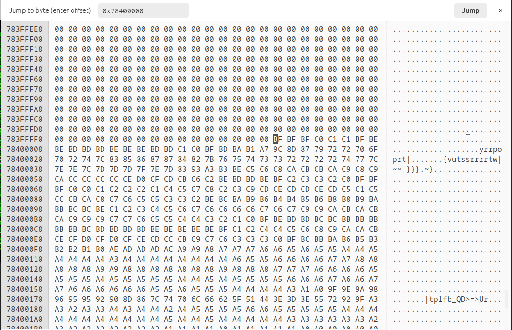

问题背景
用户反馈开启人脸解锁后，偶现密码解锁、指纹解锁、人脸解锁均无法使用，系统卡死随后出现安卓重启。
问题分析
SWT之初步释疑
查看android SWT(Software Watchdog Timeout)日志，发现android.ui线程卡死。1
Subject: Blocked in handler on ui thread (android.ui)
查看android.ui堆栈，可以看到该线程一直在等锁，锁id为0x05158af1。1
2
3
4
5
6
7
8
9
10
11
12
13
14
15
16
17
18
19
20
21
22
23
24
25
26
27
28
29
30
31
32
33
34
35
36
37
38
39
40
41
42
43
44
45
46
47
48
49
50"android.ui" prio=5 tid=12 Blocked
| group="main" sCount=1 ucsCount=0 flags=1 obj=0x17f405e8 self=0xb400007df01a8800
| sysTid=2904 nice=-2 cgrp=top-app sched=0/0 handle=0x7de7bbbcb0
| state=S schedstat=( 8623914505397 6889640642861 50368108 ) utm=519874 stm=342516 core=5 HZ=100
| stack=0x7de7ab8000-0x7de7aba000 stackSize=1039KB
| held mutexes=
at com.android.server.locksettings.LockSettingsService.getCredentialTypeInternal(LockSettingsService.java:1341)
- waiting to lock <0x05158af1> (a com.android.server.locksettings.SyntheticPasswordManager) held by thread 178
at com.android.server.locksettings.LockSettingsService.getCredentialType(LockSettingsService.java:1328)
at com.android.internal.widget.LockPatternUtils$1.apply(LockPatternUtils.java:946)
at com.android.internal.widget.LockPatternUtils$1.apply(LockPatternUtils.java:942)
at android.app.PropertyInvalidatedCache.recompute(PropertyInvalidatedCache.java:754)
at android.app.PropertyInvalidatedCache.query(PropertyInvalidatedCache.java:971)
at com.android.internal.widget.LockPatternUtils.getCredentialTypeForUser(LockPatternUtils.java:985)
at com.android.internal.widget.LockPatternUtils.getKeyguardStoredPasswordQuality(LockPatternUtils.java:819)
at com.flyme.server.policy.view.FlymeConfirmPasswordView.getPasswordType(FlymeConfirmPasswordView.java:238)
at com.flyme.server.policy.view.FlymeConfirmPasswordView.refreshViews(FlymeConfirmPasswordView.java:118)
at com.flyme.server.policy.view.FlymeConfirmPasswordView.initViews(FlymeConfirmPasswordView.java:114)
at com.flyme.server.policy.view.FlymeConfirmPasswordView.<init>(FlymeConfirmPasswordView.java:81)
at com.flyme.server.policy.view.FlymeConfirmPasswordView.<init>(FlymeConfirmPasswordView.java:75)
at java.lang.reflect.Constructor.newInstance0(Native method)
at java.lang.reflect.Constructor.newInstance(Constructor.java:343)
at android.view.LayoutInflater.createView(LayoutInflater.java:858)
at android.view.LayoutInflater.createViewFromTag(LayoutInflater.java:1010)
at android.view.LayoutInflater.createViewFromTag(LayoutInflater.java:965)
at android.view.LayoutInflater.rInflate(LayoutInflater.java:1127)
at android.view.LayoutInflater.rInflateChildren(LayoutInflater.java:1088)
at android.view.LayoutInflater.rInflate(LayoutInflater.java:1130)
at android.view.LayoutInflater.rInflateChildren(LayoutInflater.java:1088)
at android.view.LayoutInflater.inflate(LayoutInflater.java:686)
- locked <0x0f6a962a> (a java.lang.Object[])
at android.view.LayoutInflater.inflate(LayoutInflater.java:538)
at android.view.LayoutInflater.inflate(LayoutInflater.java:485)
at com.android.internal.policy.PhoneWindow.setContentView(PhoneWindow.java:474)
at android.app.Dialog.setContentView(Dialog.java:597)
at com.flyme.server.policy.MzGlobalActions$MzGlobalActionsDialog.onCreate(MzGlobalActions.java:326)
at android.app.Dialog.dispatchOnCreate(Dialog.java:436)
at android.app.Dialog.show(Dialog.java:325)
at com.flyme.server.policy.MzGlobalActions$MzGlobalActionsDialog.show(MzGlobalActions.java:824)
at com.flyme.server.policy.MzGlobalActions.showGlobalActionsDialog(MzGlobalActions.java:177)
at com.flyme.server.policy.MzGlobalActions.showGlobalActionsDialog(MzGlobalActions.java:134)
at com.android.server.policy.PhoneWindowManager.mzShowGlobalActionsInternal(PhoneWindowManager.java:6358)
at com.android.server.policy.PhoneWindowManager.showGlobalActionsInternal(PhoneWindowManager.java:1641)
at com.android.server.policy.PhoneWindowManager$PolicyHandler.handleMessage(PhoneWindowManager.java:676)
at android.os.Handler.dispatchMessage(Handler.java:106)
at android.os.Looper.loopOnce(Looper.java:201)
at android.os.Looper.loop(Looper.java:288)
at android.os.HandlerThread.run(HandlerThread.java:67)
at com.android.server.ServiceThread.run(ServiceThread.java:44)
at com.android.server.UiThread.run(UiThread.java:45)
在SWT日志中查找上述锁id，可以找到如下线程持锁未释放。
从堆栈上来看，locksettings在进行verifyChallenge调用时，binder对端没有返回。
locksettings的对端是gatekeeperd。1
2
3
4
5
6
7
8
9
10
11
12
13
14
15
16
17
18
19
20
21
22
23
24"binder:2869_1C" prio=5 tid=178 Native
| group="main" sCount=1 ucsCount=0 flags=1 obj=0x1821f850 self=0xb400007dc0652800
| sysTid=18660 nice=0 cgrp=foreground sched=0/0 handle=0x7dc0fdbcb0
| state=S schedstat=( 2488346381691 2190821996172 10125980 ) utm=144692 stm=104142 core=5 HZ=100
| stack=0x7dc0ee4000-0x7dc0ee6000 stackSize=991KB
| held mutexes=
native: #00 pc 00000000000e06fc /apex/com.android.runtime/lib64/bionic/libc.so (__ioctl+12) (BuildId: c7a69636ad70437896f8f6cfecde9001)
native: #01 pc 000000000009757c /apex/com.android.runtime/lib64/bionic/libc.so (ioctl+160) (BuildId: c7a69636ad70437896f8f6cfecde9001)
native: #02 pc 000000000005c2a0 /system/lib64/libbinder.so (android::IPCThreadState::talkWithDriver(bool)+284) (BuildId: b5f24c77eb4cb8038980e4e1f81dcfc0)
native: #03 pc 000000000005d4fc /system/lib64/libbinder.so (android::IPCThreadState::waitForResponse(android::Parcel*, int*)+76) (BuildId: b5f24c77eb4cb8038980e4e1f81dcfc0)
native: #04 pc 000000000005d238 /system/lib64/libbinder.so (android::IPCThreadState::transact(int, unsigned int, android::Parcel const&, android::Parcel*, unsigned int)+224) (BuildId: b5f24c77eb4cb8038980e4e1f81dcfc0)
native: #05 pc 0000000000054a44 /system/lib64/libbinder.so (android::BpBinder::transact(unsigned int, android::Parcel const&, android::Parcel*, unsigned int)+192) (BuildId: b5f24c77eb4cb8038980e4e1f81dcfc0)
native: #06 pc 0000000000176bf8 /system/lib64/libandroid_runtime.so (android_os_BinderProxy_transact(_JNIEnv*, _jobject*, int, _jobject*, _jobject*, int)+156) (BuildId: da5ff736bfee156debca012f9a4e67da)
at android.os.BinderProxy.transactNative(Native method)
at android.os.BinderProxy.transact(BinderProxy.java:584)
at android.service.gatekeeper.IGateKeeperService$Stub$Proxy.verifyChallenge(IGateKeeperService.java:349)
at com.android.server.locksettings.SyntheticPasswordManager.unwrapPasswordBasedSyntheticPassword(SyntheticPasswordManager.java:1091)
at com.android.server.locksettings.LockSettingsService.spBasedDoVerifyCredential(LockSettingsService.java:2999)
- locked <0x05158af1> (a com.android.server.locksettings.SyntheticPasswordManager)
at com.android.server.locksettings.LockSettingsService.doVerifyCredential(LockSettingsService.java:2355)
at com.android.server.locksettings.LockSettingsService.checkCredential(LockSettingsService.java:2269)
at com.android.internal.widget.ILockSettings$Stub.onTransact(ILockSettings.java:649)
at android.os.Binder.execTransactInternal(Binder.java:1285)
at android.os.Binder.execTransact(Binder.java:1244)
上述线程所在的进程pid为2869，线程tid为18660。
在binderinfo中查找2869:18660，可以看到outgoing事务已经送出，gatekeeperd的pid为2448，tid为2448。1
2thread 18660: l 11 need_return 0 tr 0
outgoing transaction 1265277307: 0000000000000000 from 2869:18660 to 2448:2448 code 3 flags 30 pri 0:120 r1
在binderinfo中找到gatekeeperd的binder信息，可以看到gatekeeperd已经收到incoming事务。1
2
3
4
5
6
7
8proc 2448
context binder
thread 2448: l 02 need_return 0 tr 0
incoming transaction 1265277307: 0000000000000000 from 2869:18660 to 2448:2448 code 3 flags 30 pri 0:120 r1 node 2469 size 252:0 data 0000000000000000
node 2469: ub40000758600c1a0 cb400007586009188 pri 0:139 hs 1 hw 1 ls 1 lw 0 is 2 iw 2 tr 1 proc 2869 1121
ref 2436: desc 0 node 1 s 1 w 1 d 0000000000000000
ref 100653: desc 1 node 15289 s 1 w 1 d 0000000000000000
buffer 57317755: 0000000000000000 size 252:0:0 active
gatekeeper需要通过gatekeeper HAL(android.hardware.gatekeeper-service-qti)来实现功能。
gatekeeper只有一个线程，主线程既负责处理binder请求，也负责发起hwbinder请求，因此gatekeeperd binder请求无返回，说明gatekeeper HAL hwbinder请求无返回。
查看gatekeeperd的hwbinder上下文，可以看到outgoing事务已经送出，对端pid为1336，tid为1336。1
2
3
4
5
6
7
8
9proc 2448
context hwbinder
thread 2448: l 10 need_return 0 tr 0
outgoing transaction 1265277317: 0000000000000000 from 2448:2448 to 1336:1336 code 2 flags 30 pri 0:120 r1
transaction complete
thread 6226: l 12 need_return 0 tr 0
ref 2437: desc 0 node 3 s 1 w 1 d 0000000000000000
ref 2447: desc 1 node 210 s 1 w 1 d 0000000000000000
ref 100646: desc 2 node 1233 s 1 w 1 d 0000000000000000
继续查看gatekeeper HAL的binder信息，可以看到gatekeeper HAL已经收到incoming事务。1
2
3
4
5
6
7proc 1336
context hwbinder
thread 1336: l 02 need_return 0 tr 0
incoming transaction 1265277317: 0000000000000000 from 2448:2448 to 1336:1336 code 2 flags 30 pri 0:120 r1 node 210 size 220:32 data 0000000000000000
node 210: ub4000072b120c340 cb4000072b12220a0 pri 0:120 hs 1 hw 1 ls 1 lw 0 is 2 iw 2 tr 1 proc 2448 1122
ref 178: desc 0 node 3 s 1 w 1 d 0000000000000000
buffer 57317765: 0000000000000000 size 220:32:160 active
gatekeeper HAL是基于TEE相关的接口来实现功能的，因此需要查看该进程在用户空间的堆栈，分析hwbinder无返回原因。
比较遗憾的是，SWT日志中并没有关于gatekeeper HAL在用户空间的堆栈，但从psinfo日志也可以看到，gatekeeper HAL处理hwbinder的线程处于D状态。
Linux进程D状态(TASK_UNINTERRUPTIBLE)，不可中断的睡眠状态。
线程在某个时刻处于D状态并不能说明该线程就是异常的，但如果长时间处于D状态，那么很可能就是有问题的。1
2
3
4
5system 1336 1336 1 2243616 3572 process_invoke_req 0 D gatekeeper@1.0-
system 1336 1349 1 2243616 3572 process_accept_req 0 S gatekeeper@1.0-
system 1336 1350 1 2243616 3572 process_accept_req 0 S gatekeeper@1.0-
system 1336 1351 1 2243616 3572 process_accept_req 0 S gatekeeper@1.0-
system 1336 1352 1 2243616 3572 process_accept_req 0 S gatekeeper@1.0-
从sysrq打印所有D状态进程堆栈来看，该线程连续2秒都处于D状态，在gatekeeper HAL的业务上不可能有这么长时间，因此判定此线程异常。1
2
3[Tue May 9 14:58:24 2023] task:gatekeeper@1.0- state:D stack:11152 pid: 1336 ppid: 1 flags:0x04000008
[Tue May 9 14:58:25 2023] task:gatekeeper@1.0- state:D stack:11152 pid: 1336 ppid: 1 flags:0x04000008
[Tue May 9 14:58:26 2023] task:gatekeeper@1.0- state:D stack:11152 pid: 1336 ppid: 1 flags:0x04000008
内核态之真凶查找
通过前面的分析，已知系统发生SWT是由于gatekeeper HAL处理hwbinder的线程陷入内核态且长时间处于D状态。
结合sysrq打印所有D状态进程堆栈信息，可以看到该线程在内核中等锁。1
2
3
4
5
6
7
8
9
10
11
12
13
14
15
16
17
18[Tue May 9 14:58:24 2023] task:gatekeeper@1.0- state:D stack:11152 pid: 1336 ppid: 1 flags:0x04000008
[Tue May 9 14:58:24 2023] Call trace:
[Tue May 9 14:58:24 2023] __switch_to+0x240/0x490
[Tue May 9 14:58:24 2023] __schedule+0x638/0xacc
[Tue May 9 14:58:24 2023] schedule+0x110/0x204
[Tue May 9 14:58:24 2023] schedule_preempt_disabled+0x2c/0x4c
[Tue May 9 14:58:24 2023] __mutex_lock+0x328/0x824
[Tue May 9 14:58:24 2023] __mutex_lock_slowpath+0x18/0x28
[Tue May 9 14:58:24 2023] mutex_lock+0x48/0x118
[Tue May 9 14:58:24 2023] process_invoke_req+0x1f0/0x80c [smcinvoke_dlkm]
[Tue May 9 14:58:24 2023] smcinvoke_ioctl+0x80/0x404 [smcinvoke_dlkm]
[Tue May 9 14:58:24 2023] __arm64_sys_ioctl+0x184/0x210
[Tue May 9 14:58:24 2023] invoke_syscall+0x60/0x150
[Tue May 9 14:58:24 2023] el0_svc_common+0xb8/0xf8
[Tue May 9 14:58:24 2023] do_el0_svc+0x28/0xa0
[Tue May 9 14:58:24 2023] el0_svc+0x24/0x84
[Tue May 9 14:58:24 2023] el0t_64_sync_handler+0x88/0xec
[Tue May 9 14:58:24 2023] el0t_64_sync+0x1b4/0x1b8
process_invoke_req函数的地址为0x000000000000818c。1
2nm smcinvoke_dlkm.ko | grep -w process_invoke_req
000000000000818c t process_invoke_req
因此process_invoke_req+0x1f0的地址为0x000000000000837c，对应的代码位置如下。1
2aarch64-linux-gnu-addr2line -e smcinvoke_dlkm.ko 0x000000000000837c
vendor/qcom/opensource/securemsm-kernel/smcinvoke/smcinvoke.c:2320
查看代码，发现是smcinvoke驱动中的全局锁g_smcinvoke_lock被持有未释放。1
mutex_lock(&g_smcinvoke_lock);
查看sysrq打印所有CPU堆栈信息，在CPU7上确实有线程持锁未释放。
但由于日志缺少足够的信息，因此并无法知道此时运行在CPU7上的进程。1
2
3
4
5
6
7
8
9
10
11
12
13
14
15
16
17
18
19
20
21
22
23
24
25
26
27
28
29[Tue May 9 14:58:24 2023] sysrq: CPU7:
[Tue May 9 14:58:24 2023] Call trace:
[Tue May 9 14:58:24 2023] dump_backtrace.cfi_jt+0x0/0x8
[Tue May 9 14:58:24 2023] showacpu+0xf8/0x1b4
[Tue May 9 14:58:24 2023] flush_smp_call_function_queue+0x1f0/0x3a8
[Tue May 9 14:58:24 2023] do_handle_IPI+0xe0/0x344
[Tue May 9 14:58:24 2023] ipi_handler+0x20/0x34
[Tue May 9 14:58:24 2023] handle_percpu_devid_irq+0xc0/0x374
[Tue May 9 14:58:24 2023] handle_domain_irq+0xd0/0x154
[Tue May 9 14:58:24 2023] gic_handle_irq.33729+0x54/0x2bc
[Tue May 9 14:58:24 2023] call_on_irq_stack+0x40/0x70
[Tue May 9 14:58:24 2023] do_interrupt_handler+0x44/0xa0
[Tue May 9 14:58:24 2023] el1_interrupt+0x34/0x64
[Tue May 9 14:58:24 2023] el1h_64_irq_handler+0x1c/0x2c
[Tue May 9 14:58:24 2023] el1h_64_irq+0x7c/0x80
[Tue May 9 14:58:24 2023] __arm_smccc_smc+0x14/0x40
[Tue May 9 14:58:24 2023] __scm_smc_call+0x1b8/0x56c [qcom_scm]
[Tue May 9 14:58:24 2023] qcom_scm_invoke_callback_response+0xa8/0x12c [qcom_scm]
[Tue May 9 14:58:24 2023] invoke_cmd_handler+0x120/0x254 [smcinvoke_dlkm]
[Tue May 9 14:58:24 2023] prepare_send_scm_msg+0x15c/0x450 [smcinvoke_dlkm]
[Tue May 9 14:58:24 2023] process_invoke_req+0x294/0x80c [smcinvoke_dlkm]
[Tue May 9 14:58:24 2023] smcinvoke_ioctl+0x80/0x404 [smcinvoke_dlkm]
[Tue May 9 14:58:24 2023] __arm64_sys_ioctl+0x184/0x210
[Tue May 9 14:58:24 2023] invoke_syscall+0x60/0x150
[Tue May 9 14:58:24 2023] el0_svc_common+0xb8/0xf8
[Tue May 9 14:58:24 2023] do_el0_svc+0x28/0xa0
[Tue May 9 14:58:24 2023] el0_svc+0x24/0x84
[Tue May 9 14:58:24 2023] el0t_64_sync_handler+0x88/0xec
[Tue May 9 14:58:24 2023] el0t_64_sync+0x1b4/0x1b8
考虑到此问题发生的场景与人脸识别有关，且日志也显示人脸识别线程一直处于99%的CPU占用率状态，因此有理由怀疑运行在CPU7上的线程就是人脸识别的线程。
FaceAysncQueue线程刚好负责人脸识别TEE的接口调用，因此它的嫌疑最大。1
206-11 11:34:26.491 2869 29516 E ActivityManager: 99% 2589/vendor.xingji.hardware.biometrics.face@1.0-service: 0% user + 99% kernel
06-11 11:34:26.491 2869 29516 E ActivityManager: 99% 2639/FaceAysncQueue: 0% user + 99% kernel
结合TEE人脸识别的日志，可以看到问题发生时，HAL调用人脸识别TA，人脸识别TA一直没有返回。
因此，人脸识别就是罪魁祸首。
kdump之根因定位
日志的信息比较有限，只能分析到上述的结论，万幸的是，在其他复现问题的机器上抓到了kdump。
虽然问题发生在TEE中，但只要有kdump和symbols，那么原理上就可以解析出对应的堆栈，最终解析堆栈如下。1
2
3
4
5
6-000|Laplacian(asm)
-001|oem_tee_image_quality_sharpness(asm)
-002|oem_tee_quality(asm)
-003|getFeature()
-004|handle_cmd_get_feature()
-005|tz_app_cmd_handler()
考虑到问题本身不容易复现，算法由供应商提供，添加日志定位问题周期长，因此需要更进一步的手段来定位问题。
通过trace32进一步解析，获取通用寄存器，TA加载地址等信息如下。1
2
3
4
5
6
7
8
9
10
11
12
13Register:
X0 = 0x75CF2AC0, X1 = 0x75CF2980, X2 = 0x00000000, X3 = 0x00000000,
X4 = 0x00015888, X5 = 0x00010910, X6 = 0x00010911, X7 = 0x0000001F,
X8 = 0xFFFFFFFE, X9 = 0x00000FED, X10 = 0x75CF2000, X11 = 0x7FFFFFFF,
X12 = 0x00001FFF, X13 = 0xFFFFFFFE, X14 = 0x0000000F, X15 = 0x00000010,
X16 = 0x00000001, X17 = 0x73656E73, X18 = 0x0000FFFF, X19 = 0x00000000,
X20 = 0x75CF2980, X21 = 0x75CF2980, X22 = 0x75CF2AC0, X23 = 0x00000000,
X24 = 0x00000000, X25 = 0x00000000, X26 = 0x75CF2AC0, X27 = 0x00000000,
X28 = 0x00000000, X29 = 0x1F65ED90, X30 = 0x38586CA8, ELR = 0x385863A8,
PC = 0x385863A8
VA of stapp loading start: 0x38479000
Entry of Laplacian :0x38586358
问题点虚拟地址为0x385863A8，Laplacian函数虚拟地址为0x38586358。
因此，问题点在Laplacian偏移offset=0x385863A8-0x38586358=0x50位置。
Laplacian函数链接地址0x107a78，所以问题点的链接地址为0x107a78+0x50=0x107AC8。
反汇编显示，0x107AC8地址附近刚好是个循环。
循环部分的汇编代码如下。1
2
3
4
5CMP W11, #0
CSEL W13, WZR, W8 LT
SUB W11, W13, W11
CMP W11, W25
B.CS loc_107AC8
CMP W11, #0，和立即数0做比较。CMP指令的实现SUB指令基本同等，区别是SUB指令需要将结果保存到寄存器，CMP指令丢弃计算结果。CMP指令和SUB指令执行后都会更新CPSR寄存器的NZCV标志位。W11的值是0X7FFFFFFF，也就是0X7FFFFFFF-0x0=0X7FFFFFFF-0x0。结果大于0且没有借位和溢出，所以结果是N=0，Z=0，C=1，V=0。
CSEL W13, WZR, W8 LT，如果前一条比较指令是LT(小于)情况下(即N!=V)，则W13=WZR，否则W13=W8。前面的CMP指令执行后N==V，W8=0xFFFFFFFE，所以结果是W13=0xFFFFFFFE。
SUB W11, W13, W11，W11=W13-W11，W11=0x7FFFFFFF，所以结果是W11=0xFFFFFFFE-0x7FFFFFFF=0x7FFFFFFF。
CMP W11, W25，和W25的值做比较。W11=0x7FFFFFFF，W25=0x00000000，所以结果是N=0，Z=0，C=1，V=0。
B.CS loc_107AC8，如果CPSR寄存器的C标志位置位，则跳转到地址0x107AC8，继续循环。上面的结果是C标志位置位的，所以循环继续，形成死循环。
上面这段汇编代码是一个循环，跳出循环的条件是W11小于W25。W11只有两个值，要么是1，要么是W8-1。W8的值为W25*2-2。当W25为0或1的时候，循环就会无法跳出。当W25的值大于1时，第一轮循环就会跳出不再继续。而W25是函数传入的第三个参数，这个值刚好等于0。
从函数的命名来看，这应该是一个拉普拉斯变换的实现，函数有四个参数。猜测第一个参数是变换前的数据，第二个参数是变换后的数据，第三个和第四个参数是宽度和高度。
从供应商获取函数签名，确实如上面的猜测一样。
也就是说，这里面存在两个问题。一是没有进行边界检查，导致代码存在死循环的可能。二是如果逻辑走到这个函数，这里的宽度是不能为0的。在宽度为0的时候，oem_tee_image_quality_sharpness不应该调用Laplacian函数。
从日志来看，出现问题时应该是在没有检测到人脸或者从没有检测到人脸过渡到检测到人脸(即出现问题时算法刚好判断出有人脸)的环境下。
1 | face: tz_app_cmd_handler(674):enter handler 0x65373170 |
代码的逻辑是oem_tee_image_create->oem_tee_detect->oem_tee_quality。
结合问题堆栈来看，oem_tee_detect返回的结果是检测到人脸。
因此，压测手法可以为抬手进行人脸识别，模拟人脸从无到有的过程。
以上仅仅只是分析，需要有办法对这个问题进行复现和修复验证，上述压测手法不一定能很快复现到问题。
可以考虑使用问题出现时的人脸数据进行重现，看问题能否稳定复现。由于人脸识别没有做数据保存，因此只能在kdump中查找数据。
人脸识别REE与TEE通信时，会从dmabuf申请一片内存作为共享内存。因此使用crash工具加载kdump，通过vm命令找到人脸识别HAL进程打开的dmabuf地址，最后通过rd命令导出数据。
根据代码知道，人脸录入时这片buffer大小为0x55000，人脸识别时这片buffer大小为0x71000。
1 | crash> ps | grep face@1.0 |
导出的数据为nv21 rawdata格式，需要将数据转为jpeg。从实际dump出来的数据来看，并不符合预期。
通过做实验，为这片共享内存传入指定数据，再dump出来，发现正常情况下，传入的数据与dump出来的数据也不一致。
因此目前并无法通过dump dmabuf来拿到数据，具体原因有待调查。
既然无法从dmabuf dump出正确的数据，那就尝试传入特定数据，直接从kdump的二进制文件特定偏移位置找到数据。
实验发现，在A项目上可以在DDRCS0_0.BIN的0x65300000位置(使用binwalk进行二进制查找上述特定数据)dump出正确的人脸数据，但是在出现问题的B项目上，得到的数据不符合预期。
而B项目由于某些原因，没法做实验找到偏移的位置，因此只能采取其他办法。
人脸识别使用的图片数据为nv21，实验中发现，nv21格式具有比较明显的数据特征。
因此尝试使用如下命令进行特征查找。
1 | xxd DDRCS0_0.BIN > tee xxd.log |
查找出来的特征不算太多。
使用ghex打开DDRCS0_0.BIN，在上述可能的特征前后进行查看，定位到一处比较可疑的内存地址，偏移为0x78400000，物理地址为0x78400000+0x80000000。将数据dump出来后导入手机进行复现，确认问题是可以稳定复现的。

查看导出的数据，可以看到图片中并没有人脸，但算法误判存在人脸特征，导致逻辑走到oem_tee_quality。
Laplacian陷入死循环的原因是因为width参数为0，但根据供应商的描述，width参数的值是通过oem_tee_quality传递进去的。从再次复现打日志打印来看，oem_tee_quality传递的宽度为640，因此只能怀疑在oem_tee_quality或者oem_tee_image_quality_sharpness函数内部，有异常逻辑会导致传入Laplacian的width为0。
最后的解决方案是供应商在更新算法库的同时，为Laplacian加入边界检查逻辑，提升代码健壮性。
参考资料
- NZCV，https://developer.arm.com/documentation/ddi0595/2021-06/AArch64-Registers/NZCV--Condition-Flags
- Conditional，https://developer.arm.com/documentation/dui0068/b/ARM-Instruction-Reference/Conditional-execution
- CMP，https://developer.arm.com/documentation/ddi0596/2020-12/Base-Instructions/CMP--immediate---Compare--immediate---an-alias-of-SUBS--immediate--
- CSEL，https://developer.arm.com/documentation/ddi0596/2020-12/Base-Instructions/CSEL--Conditional-Select-
- B.cond，https://developer.arm.com/documentation/ddi0596/2020-12/Base-Instructions/B-cond--Branch-conditionally-
This is copyright.